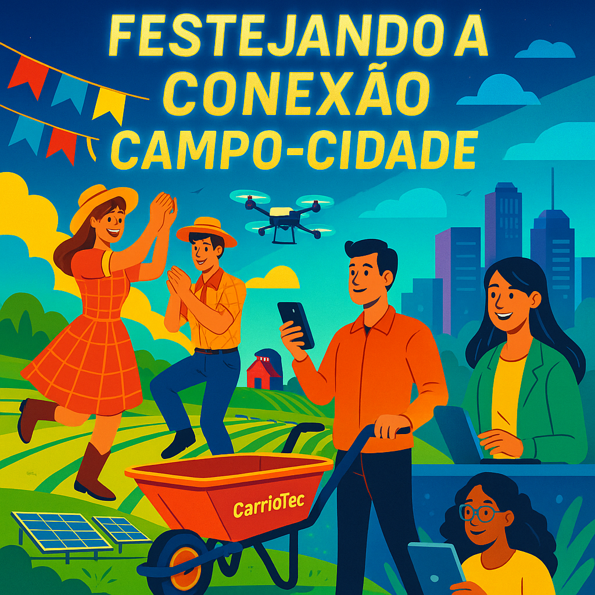
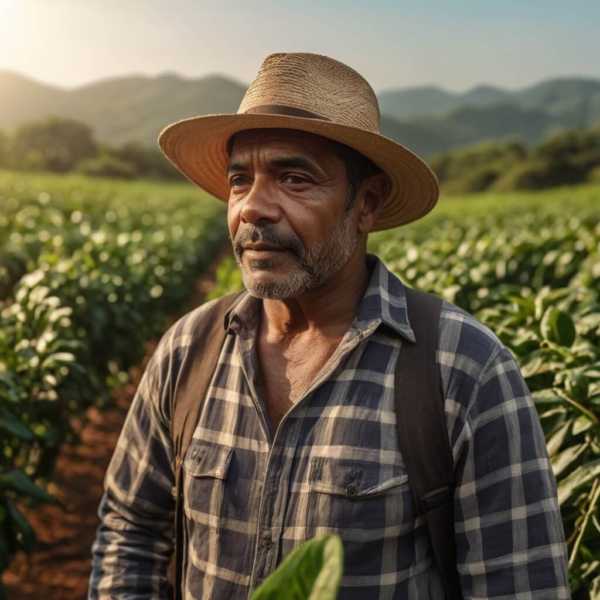
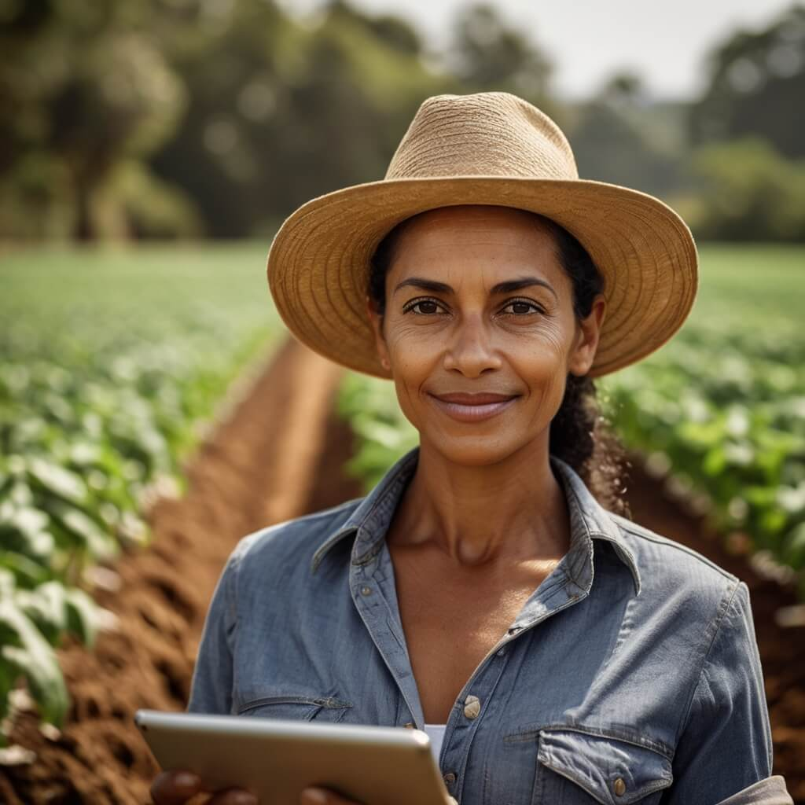
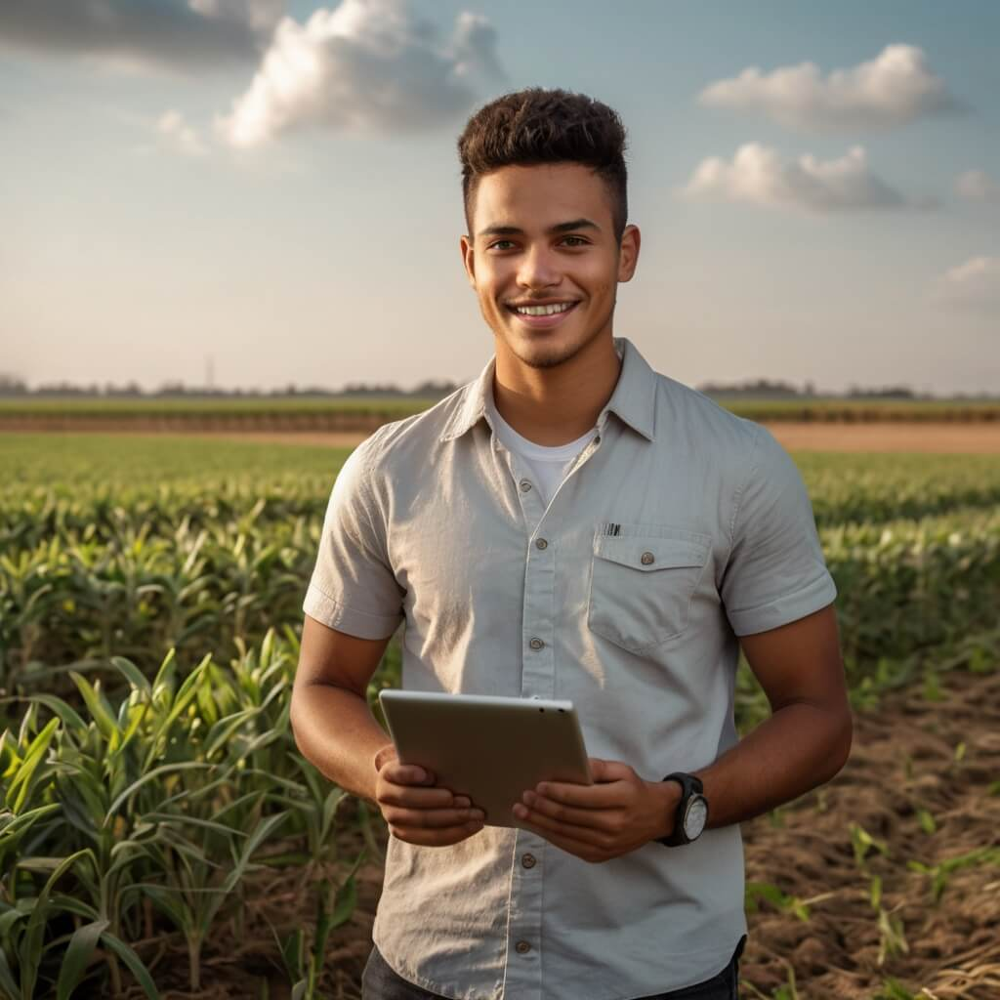
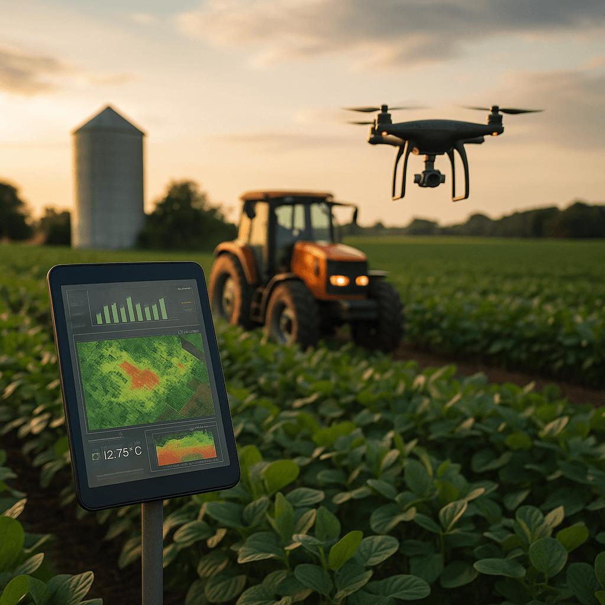
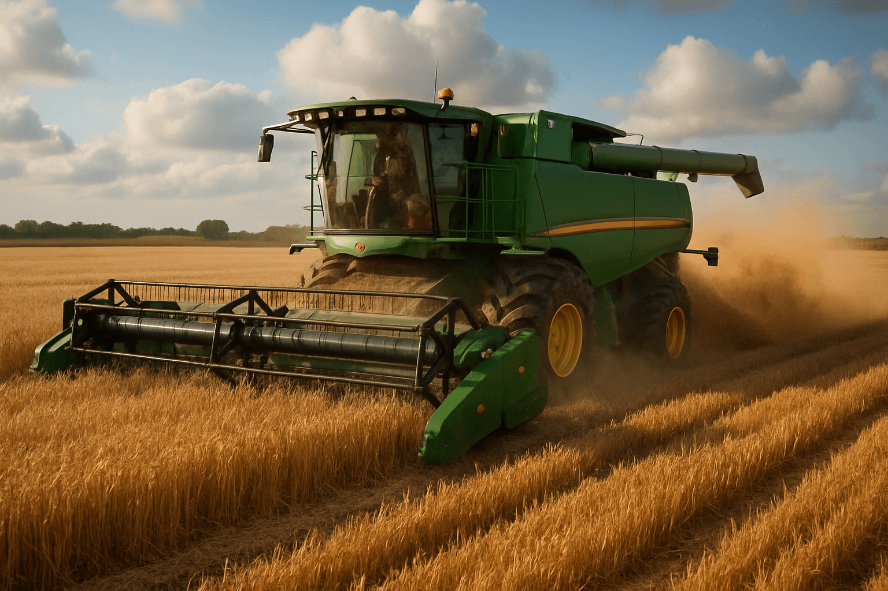
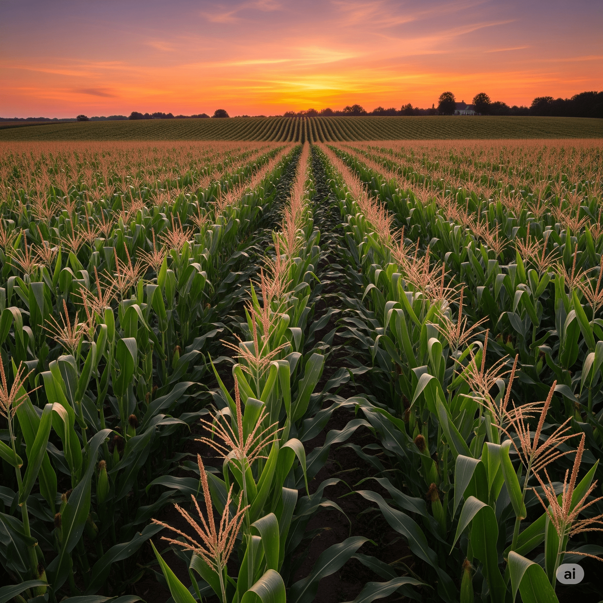
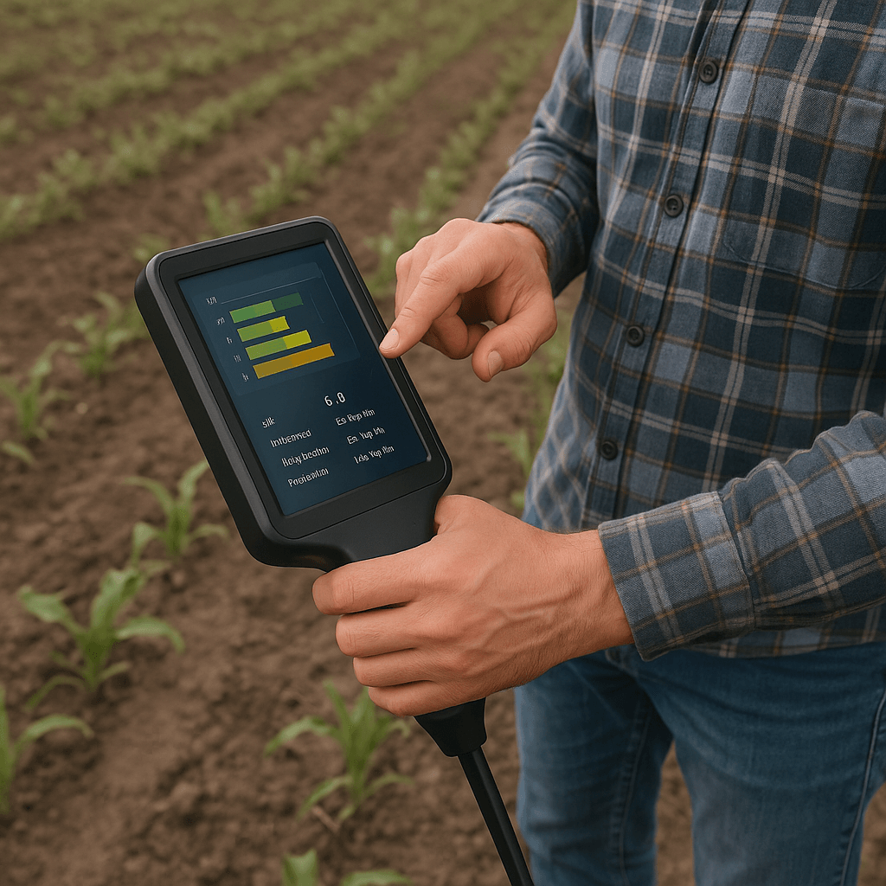
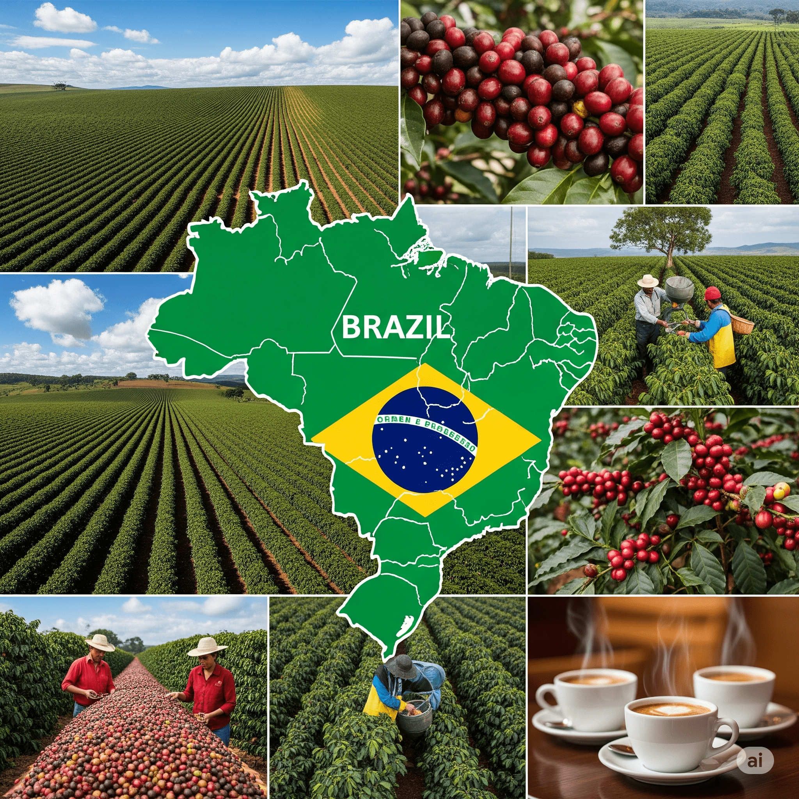
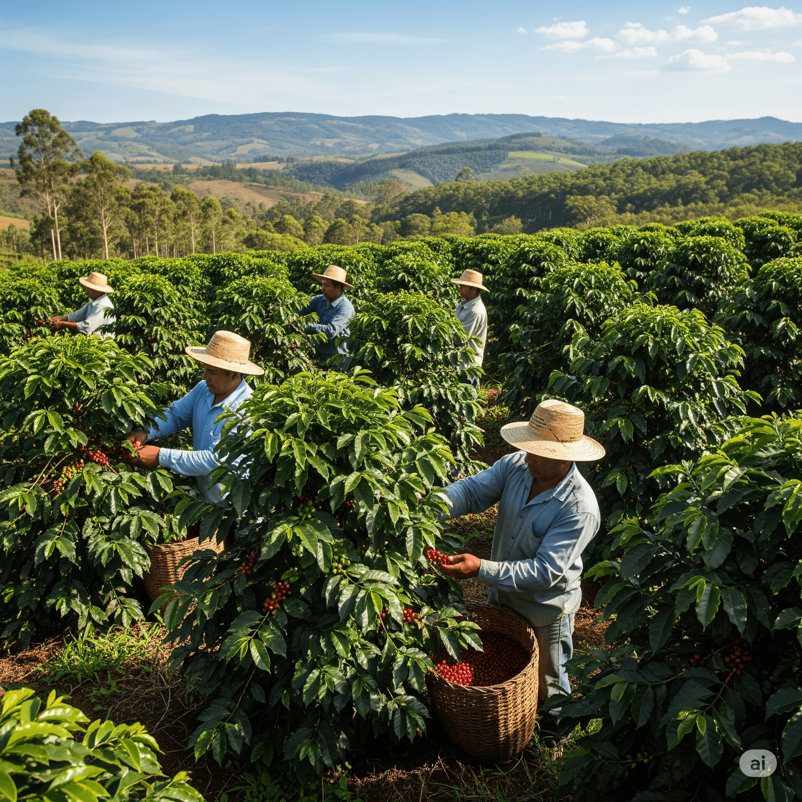

Bem-vindo(a) ao AgroConexão, nosso projeto para o Agrinho 2025 – uma iniciativa que une educação, cidadania e o fascinante universo do agronegócio!
Já pensou na jornada incrível que o alimento faz até chegar à sua mesa? Ou em como a tecnologia que você usa no seu celular pode revolucionar uma plantação inteira? É exatamente essa a nossa proposta: mostrar que o campo e a cidade, a tradição e a inovação, estão mais conectados do que nunca. Queremos desmistificar o agronegócio e revelar como ele impacta diretamente a sua vida, promovendo segurança alimentar e desenvolvimento.
Nossa Missão: Conectar para Inovar e Sustentar
Acreditamos que o futuro do agronegócio está nas mãos de jovens curiosos e criativos como você. O AgroConexão nasceu para ser a ponte que une o conhecimento valioso dos produtores rurais com as ideias inovadoras de pesquisadores, agrônomos e a sua energia para mudar o mundo. Nosso objetivo é provar que é possível ter uma agricultura mais produtiva, justa e, acima de tudo, sustentável, garantindo recursos para as futuras gerações.
Você é a Próxima Geração da Agricultura 4.0
Esqueça a imagem antiga do campo! Hoje, o agronegócio é sinônimo de alta tecnologia e inovação. Ele envolve drones que monitoram a saúde das plantas com precisão, inteligência artificial que prevê o clima e otimiza a colheita, sistemas de gestão integrada para rastreabilidade e até aplicativos que ajudam a vender produtos frescos diretamente para o mundo todo. E é aqui que você entra: o AgroConexão é o seu portal para esse universo. Ao explorar nosso site, você descobrirá histórias reais de sucesso, tecnologias que parecem de ficção científica e como você pode ser protagonista dessa revolução.
Navegue pelas abas, conheça as pessoas por trás da produção de alimentos, veja a tecnologia em ação, inspire-se e descubra novas possibilidades de carreira. O AgroConexão é a nossa semente. Com a sua participação, ela vai germinar e dar muitos frutos para um futuro mais próspero e consciente. Vamos juntos cultivar o futuro?
Festejando a Conexão Campo-Cidade: A Alma do AgroConexão para o Agrinho 2025.
O tema oficial do Agrinho 2025, "Festejando a Conexão Campo-Cidade", é o coração do nosso projeto AgroConexão. Ele nos convida a celebrar e aprofundar o entendimento sobre a relação vital entre o ambiente rural e o urbano, mostrando como um depende e enriquece o outro.
Muitas vezes, a vida na cidade e a vida no campo parecem realidades distantes, mas a verdade é que elas estão intrinsecamente ligadas. Cada alimento em nossa mesa, a matéria-prima de nossas roupas e até a energia que ilumina nossas casas vêm, em grande parte, do trabalho árduo e inovador do campo. Da mesma forma, o campo se beneficia da tecnologia, da pesquisa, da infraestrutura e dos mercados oferecidos pela cidade.
Por Que Festejar Essa Conexão?
Alimentação Segura e Abundante: A cidade consome o que o campo produz, e o campo se moderniza para atender essa demanda. É uma parceria que garante comida de qualidade para todos.
Inovação e Tecnologia: As inovações desenvolvidas nos centros urbanos, como softwares, drones e biotecnologia, encontram no campo um vasto campo de aplicação, otimizando a produção e promovendo a sustentabilidade.
Sustentabilidade Ambiental: Uma conexão consciente entre campo e cidade promove práticas agrícolas mais sustentáveis e o desenvolvimento de políticas ambientais que beneficiam a todos. O cuidado com o solo, a água e a biodiversidade no campo impacta diretamente a qualidade de vida na cidade.
Crescimento Econômico e Social: O agronegócio é um motor da economia, gerando empregos e renda tanto no campo quanto na cidade. Essa interdependência fomenta o desenvolvimento mútuo.
Cultura e Tradição: A cultura rural, suas festas, culinária e valores enriquecem a vida urbana, e vice-versa. É uma troca constante que fortalece a identidade do nosso país.
O AgroConexão, com suas histórias de sucesso, exemplos de tecnologia e informações sobre o agronegócio, é a nossa forma de "Festejar a Conexão Campo-Cidade". Queremos que você veja essa relação não apenas como uma necessidade, mas como uma oportunidade para construir um futuro mais próspero, equilibrado e conectado para todos. Junte-se a nós nessa celebração!
🎉 Viva a Alegria do Campo e da Cidade! 🎉

🌽🎶 Tradição, tecnologia e alegria: juntas na mesma festa! 🎶🌽
Quando o campo convida e a cidade aceita, nasce uma festa cheia de música, sabores e sorrisos. 🌾💃🕺
🎡 Expôs Agropecuárias:
Feiras com inovação, música ao vivo e negócios rurais que encantam a cidade.
🧀 Feiras do Produtor:
Sabores autênticos direto do campo: queijos, hortas, bolos e alegria comunitária.
🎵 Festas Juninas:
Pipoca, quadrilha e bandeirinhas que fazem o coração bater no ritmo da roça.
🐂 Rodeios & Cavalgadas:
Tradição sertaneja com emoção, laço firme e orgulho rural em cada passo.
🍛 Festivais Gastronômicos:
Sabores da roça que conquistam os paladares da cidade em grandes celebrações.
💬 "Quando o campo planta cultura, a cidade colhe alegria!"
Histórias que Transformam
Conheça pessoas reais que, com a ajuda da tecnologia e da colaboração, estão reescrevendo o futuro do agronegócio no Brasil.

João: Do Sítio para o Mundo
João, produtor de café especial em Minas Gerais, enfrentava um grande desafio: como vender seu produto por um preço justo, sem depender de atravessadores. Usando as ferramentas da AgroConexão, ele aprendeu a criar uma marca online, fotografar seu café e usar o WhatsApp Business para negociar diretamente com cafeterias de todo o país.
"Eu não imaginava que a tela do meu celular poderia se tornar minha vitrine para o mundo. A tecnologia não substituiu minha tradição, ela a valorizou."
✅ +60% de aumento na renda familiar.
✅ Acesso direto a 15 novos mercados.
✅ Produção com selo de rastreabilidade digital.

Maria: A Lavoura Inteligente
No interior do Paraná, Maria e sua família viam a produção de hortaliças sofrer com as mudanças do clima. Com a ajuda de técnicos parceiros, ela instalou sensores de umidade no solo conectados a um app e passou a usar drones para identificar pragas antes que se espalhassem. O resultado? Uma colheita mais farta e sustentável.
"A gente achava que tecnologia era coisa de filme. Hoje, ela é nossa principal ferramenta para cuidar da terra e garantir o futuro dos nossos filhos."
✅ -40% de redução no consumo de água para irrigação.
✅ +25% de aumento na produtividade.
✅ Zero desperdício de fertilizantes.
A Revolução Digital no Campo
A tecnologia deixou de ser um luxo para se tornar a principal aliada do produtor moderno. Da comunicação instantânea ao monitoramento por satélite, a Agricultura 4.0 já é uma realidade. Explore algumas das ferramentas que estão impulsionando a eficiência, a sustentabilidade e a lucratividade no campo.
Na Palma da Mão: Ferramentas do Dia a Dia
📱Conecte-se e Venda
Use o WhatsApp para criar catálogos, negociar diretamente com compradores e expandir seu alcance de forma simples e gratuita.
Drones equipados com câmeras especiais sobrevoam a lavoura para identificar focos de pragas, falhas no plantio e áreas que precisam de mais água ou nutrientes. É como ter um mapa da saúde da sua plantação em tempo real, permitindo ações rápidas e econômicas.
A "Internet das Coisas" (IoT) conecta o campo. Sensores instalados na terra medem a umidade, a temperatura e os nutrientes do solo, enviando os dados direto para o celular do agricultor. O resultado é o uso de água e fertilizantes na medida certa, sem desperdício.
Veja como o agronegócio brasileiro evoluiu ao longo do tempo, desde as práticas tradicionais até a agricultura 4.0!
1900-1950
Produção Manual e Familiar
Agricultura baseada em força humana e animal, com pouco acesso à tecnologia ou mecanização.
1950-1980
Mecanização e Expansão
Uso de tratores, colheitadeiras e adubos químicos. Expansão da fronteira agrícola.
1980-2000
Modernização
Entrada da biotecnologia, irrigação controlada e melhoramento genético.
2000-2020
Globalização e Sustentabilidade
Exportações, rastreabilidade, certificações e início da agricultura de precisão.
2020–2025
Agricultura 4.0 e Inteligência Artificial
Integração avançada de sensores, IA, automação e análise de dados. Agricultura conectada, mais sustentável e produtiva, com foco em clima, precisão e rastreabilidade.
🌾 Curiosidades sobre o Agro
🌱 O Brasil é potência
É o maior exportador de soja, café, carne bovina e suco de laranja do mundo.
💧 Preservação de água
O agro moderno adota irrigação por gotejamento e sensores de solo para evitar desperdício.
🛰️ Agricultura 4.0
Drones, satélites e Internet das Coisas (IoT) monitoram plantações em tempo real.
🌎 Solo brasileiro é diverso
O Brasil possui todos os tipos principais de solo, tornando-o ideal para variados cultivos.
📈 1 em cada 3 empregos
No Brasil, cerca de 1 a cada 3 empregos estão ligados ao agronegócio direta ou indiretamente.
🧪 Ciência no campo
Pesquisas da Embrapa ajudaram a transformar o cerrado em uma das áreas mais produtivas do mundo.
🌽 Plantas com chip
Hoje, é possível rastrear o ciclo completo de um alimento — da semente ao supermercado — com QR Code.
🌤️ Clima e produção
Estudos climáticos ajudam agricultores a escolher o melhor período de plantio e colheita.
🚜 Trator autônomo
Alguns tratores já operam sozinhos com GPS, evitando sobreposição e aumentando a produtividade.
O maior resultado do nosso trabalho é o sucesso de quem confia na nossa plataforma. Veja o que eles têm a dizer:
"Antes, eu vendia meu café sem saber seu valor real. Com o AgroConexão, aprendi a criar minha marca e hoje meu 'Café do Sítio' chega a lugares que eu nunca imaginei. A tecnologia me deu voz."
"Ver a lavoura produzir mais com menos água parecia impossível. Os sensores e os dados no celular mudaram nosso jeito de plantar. É cuidar da terra e garantir o futuro da nossa família ao mesmo tempo."

"Eu achava que o campo era só tradição. No AgroConexão, descobri um universo de inovação e vi que posso unir minha paixão por tecnologia com a agronomia. Esse projeto me inspirou a seguir essa carreira."
Nossa Galeria
Imagens que capturam a alma, a força e a inovação do campo brasileiro. Clique para ampliar e navegar.
Amanhecer na plantação

Tecnologia de monitoramento

Colheita mecanizada

O rosto do campo

Análise de soloO início de tudo

O Brasil do Café

Mãos que Produzem Qualidade
Sobre Nós
Olá! Meu nome é Edis Eduardo Buturi, sou aluno do 3º ano do Ensino Médio. Este site foi idealizado e desenvolvido por mim como parte do projeto AgroConexão, para o Programa Agrinho 2025.
Meu objetivo com esse projeto é mostrar como a tecnologia pode transformar o campo, aproximar a cidade da realidade rural e inspirar outras pessoas a enxergarem o agronegócio com inovação, sustentabilidade e respeito.
Embora eu tenha sido o principal responsável pela criação do site e pela programação, tive o apoio de amigos incríveis como Michel, Maicon e Thiago, além da orientação e incentivo da professora Brunna, que me ajudaram com ideias e sugestões para melhorar o projeto.
O AgroConexão representa não só o resultado de muito esforço e aprendizado, mas também o espírito de colaboração e vontade de fazer a diferença no mundo.
Obrigado por visitar o site. Espero que ele te inspire tanto quanto me inspirou construí-lo!
Fontes, Ferramentas e Inspiração
Este projeto foi construído com base em informações de fontes confiáveis e no uso de ferramentas digitais. Explore os links abaixo para aprofundar seu conhecimento.